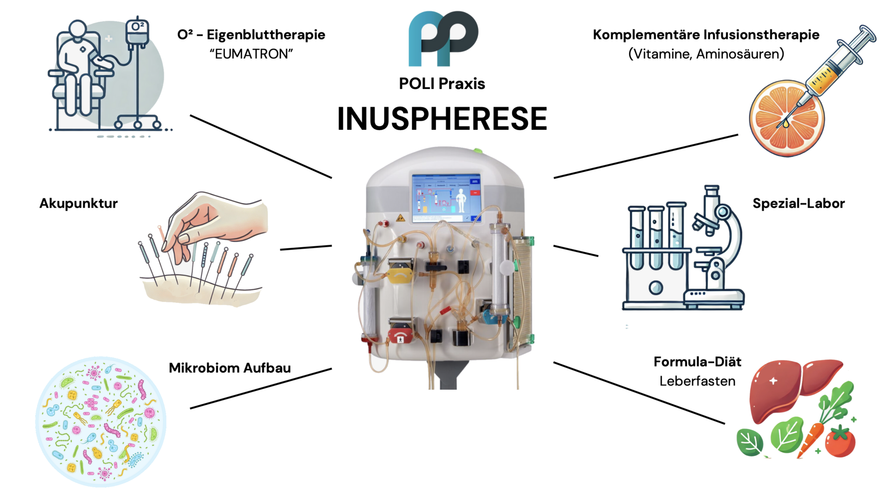
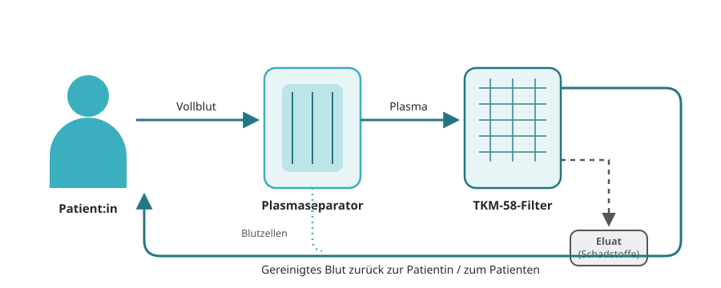
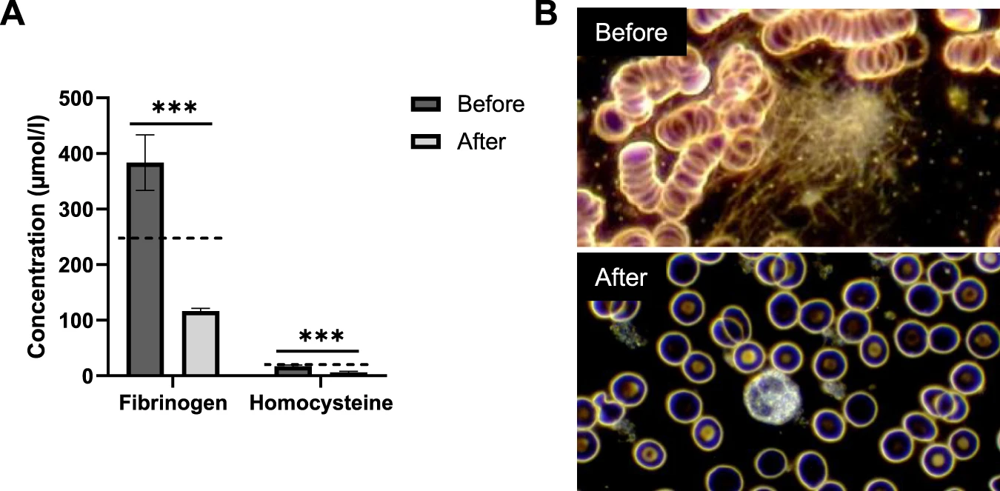
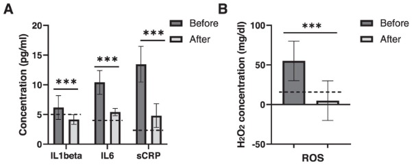

INUSpherese®
Inuspherese — Was ist das?
Die Inuspherese ist eine spezielle Form der Blutwäsche, die in inzwischen über 70.000 Einsätzen seit Jahrzehnten erprobt ist.
Da sie nur die flüssigen Bestandteile des Blutes über einen speziellen Filter (den TKM-58) laufen lässt und hier gezielt nur schädliche Stoffe herauszieht, ist sie eine lang erprobte und nebenwirkungsarme Form, um verschiedene für den Körper schädliche Stoffe herauszuholen.
Hier ist hervorzuheben, dass es nur wenige Verfahren gibt, die Mikroplastik und Spike Proteine zuverlässig aus dem Körper herausholen können.
Das gibt der Inuspherese mit dem speziell patentierten Verfahren und dem Filter, der innerhalb der Behandlung auch mehrfach spülbar ist, im Vergleich zu anderen Formen der Blutwäscheverfahren, die ebenfalls Schwermetalle, Immunkomplexe und schädliche (Auto-) Antikörper sowie lösliche Umweltgifte entfernen oder die Durchblutung verbessern, quasi ein Alleinstellungsmerkmal. Noch dazu beinhaltet sie aber eben das ganze genannte Spektrum einer umweltmedizinischen Apherese.

Inuspherese — wie läuft es ab?
Die Behandlung findet ambulant in unserer Praxis statt und dauert ca. 2–3 Stunden. Sie liegen dabei entspannt auf einer bequemen Liege.
- Schritt 1 — Zugänge legen: Es werden über die Armvenen Zugänge gelegt — ein Zu- und ein Abfluss sozusagen.
- Schritt 2 — Plasmatrennung: Das Vollblut wird im ersten Filter — dem Plasmafilter — in das flüssige Blutplasma und die festen Blutkörperchen aufgeteilt.
- Schritt 3 — Filtration: Das Blutplasma wird dann über den eigentlichen TKM-58 Filter, den Plasmafraktionator, geleitet. In diesem einzigartig patentierten Filter, der in einem Prozess von ca. 2 Stunden auch mehrfach gespült werden kann, werden dann Mikroplastik, Chemikalien, toxische Metalle, Pestizide, schadhafte Proteine inklusive Spikeprotein, Entzündungsbotenstoffe und autoimmune Antikörper zurückgehalten und herausgefiltert.
- Schritt 4 — Rückführung: Das gereinigte Blutplasma wird dann wieder als Vollblut mit den festen Blutbestandteilen zusammen dem Körper zurückgeführt.
In der Regel empfehlen wir eine Grundreinigung aus zwei Sitzungen im Abstand von 48 Stunden.

Inuspherese — Verbesserung der Durchblutung
Die roten Blutkörperchen müssen einzeln durch die Kapillaren passieren — sich sozusagen „durchquetschen". Durch Entzündungsstoffe und andere Prozesse kleben sie aber oft aneinander — das Geldrollenphänomen. Nach der Inuspherese war in der u. gen. Studie eine eindrucksvolle Reduktion dieses Phänomens sichtbar.
Quelle: doi.org/10.1038/s41380-023-02084-1
In der zitierten Studie waren es Homocystein und Fibrinogen, die als wichtige Parameter für Verschlechterung des Blutflusses gemessen wurden und sich nach der Inuspherese dann deutlich verminderten. Ebenfalls nimmt man an, dass die Endothelien — die innere Auskleidung der Blutgefäße — glatter werden und weniger entzündliche Andockstationen für Blutverklumpungen bieten.

Inuspherese — MUKPS, die chronische Multisystemerkrankung
In einer Fallstudie mit Einschluss von 1111 Patienten, die unter der Ägide der Uni Dresden durchgeführt wurde, berichten 74 % der Teilnehmer beschwerdefrei oder nahezu beschwerdefrei nach sechs Monaten und drei Behandlungen zu sein. Unseres Wissens nach ist somit die Inuspheresetherapie mit angeschlossener Nachbehandlung die effektivste Therapieform auf dem Gebiet ME/CFS.
Quelle: thieme-connect.de/products/ejournals/html/10.1055/a-1945-9694
Viele Aspekte werden hierfür als Erklärung ins Feld gebracht. Exemplarisch wollen wir hier die Reduktion verschiedener Autoantikörper gegen Neurotransmitter, wichtige Botenstoffe zur Kommunikation der Zellen des zentralen und peripheren Nervensystems, vor Augen führen.
(Antikörper gegen β1 und β2 adrenerge Rezeptoren (AdR) und die M3 und M4 Acetylcholin-Rezeptoren (AChR) wurden im Blut von Long-Covid Patienten gemessen (n = 27) vor und nach der Apherese. Referenzwerte sind mit der gepunkteten Linie markiert. RAA: receptor autoantibodies.)
Inuspherese — Gegen Mikroplastik: gegen die hormonelle Disruption
Mikroplastikpartikel sind in unserer Umwelt allgegenwärtig — in Lebensmitteln, Trinkwasser, Kleidung und der Luft. Sie gelangen in unseren Körper und können als sogenannte endokrine Disruptoren das Hormonsystem stören.
„In der gegenwärtigen Forschung werden die Schadstoffe, die wir durch die Nahrung, Luft oder Hautkontakt aufnehmen, als ‚endokrine Disruptoren' bezeichnet. Denn sie stehen im Verdacht, Hormonkreisläufe zu stören oder zu beeinträchtigen und somit Einfluss auf Wachstum und Entwicklung, Stoffwechsel, Fortpflanzung, Stimmung und Verhalten zu haben. Die Folgen sind unter anderem Unfruchtbarkeit, Adipositas oder Diabetes."
Lydia Kürzinger und Benedikt Pötzl vom Universitätsklinikum Würzburg
Quelle: ukw.de — Wie das Kunststoffzeitalter unsere Hormone beeinträchtigt
Die Frauen haben in den letzten Jahrzehnten eine halbe Körbchengröße hinzugewonnen. Die Männer leiden unter dem antagonisierenden Effekt für die männlichen Sexualhormone durch Mikroplastik. Auch dies kann an veränderter Körperform und verminderter Spermienqualität festgemacht werden.
Uns ist keine andere Methode bekannt, die so effektiv Mikroplastik aus dem Körper ausleiten kann. Zur Prüfung unserer Hypothese, dass die Reduktion des Mikroplastik und natürlich der anderen schädigenden Faktoren wie lösliche Pestizide und Schwermetalle die Spermienqualität verbessern kann, legen wir eine Fallstudie auf, die wir in unserem Inus Zentrum für Chronische Gesundheit durchführen werden. Sprechen Sie uns bei Wunsch nach Teilnahme an!
Inuspherese — Wirkung bei chronischen Entzündungen und Autoimmunprozessen
Ähnlich wie Schmerz haben Entzündungsprozesse in unserem Körper eine lebenserhaltende Funktion. Laufen sie jedoch aus dem Ruder, verselbständigen sie sich und werden so chronisch oder wenden sie sich gegen den Körper, kann dies massiv Lebensqualität und auch Lebenszeit kosten.
Auch hier ist in Fallstudien der Effekt auf chronische Entzündungsprozesse untersucht worden. Dies kann man an diversen Botenstoffen und Mediatoren wie den Interleukinen oder dem Tumornekrosefaktor alpha festmachen sowie an Enzymen wie dem s(ensitive)CRP oder Homocystein.
„Darüber hinaus waren sCRP und die proinflammatorischen Zytokine IL-1 beta und IL-6 nach der Apherese alle signifikant reduziert (33 %, 48 % und 64 %)."
Quelle: doi.org/10.1038/s41380-023-02084-1
Hier ist die Inuspherese ein sehr starker Hebel, der umgelegt werden kann, um die Entzündungsaktivität herunterzufahren. Wir bieten dazu ein integratives Konzept zur Nachbehandlung an, da es hier darum geht, dem Körper auch nach der Inuspherese zu helfen, in gesunde Regulierungsprozesse einzusteigen.

Inuspherese — bei LongCovid und PostVac
Wir schrecken natürlich nicht zurück bei im Zusammenhang mit Covid aufgetretenen chronischen Erkrankungsprozessen. Von der ersten Stunde an sind wir mit hohem Einsatz an der Seite unserer Patienten gestanden und haben auch zunächst unbekannte Wege begangen, welche sich zum Teil auch später als effektiv und richtig erwiesen haben. Getreu dem Motto, den Patienten als Mitmensch würdevoll und zugewandt zu behandeln, stehen wir auch in diesem Bereich mit einem integrativen Konzept an Ihrer Seite.
Inuspherese — Wie viel kostet es?
Die INUSpherese® ist eine privatärztliche Leistung. Die Kosten variieren je nach individuellem Behandlungsumfang und den eingesetzten Filtern.
Erstberatung
158 €
Dieser Betrag wird bei Durchführung der Behandlung auf die Gesamtkosten angerechnet
Einzelbehandlung
2.700 €
Ärztliches Gespräch, Voruntersuchungen, Behandlung und medizinische Betreuung mit individueller Therapieplanung
Empfohlenes Paket
5.200 €
2 Behandlungen innerhalb von 3–5 Tagen
Die Kosten werden in der Regel nicht von den gesetzlichen Krankenkassen übernommen. Eine Kostenübernahme durch private Krankenversicherungen ist je nach Tarif und Indikation möglich.
Fragen zur INUSpherese®?
Exklusiv in der Poli-Praxis München Mitte. Rufen Sie uns an unter +49 89 1890 4350 oder vereinbaren Sie Ihre Erstberatung.